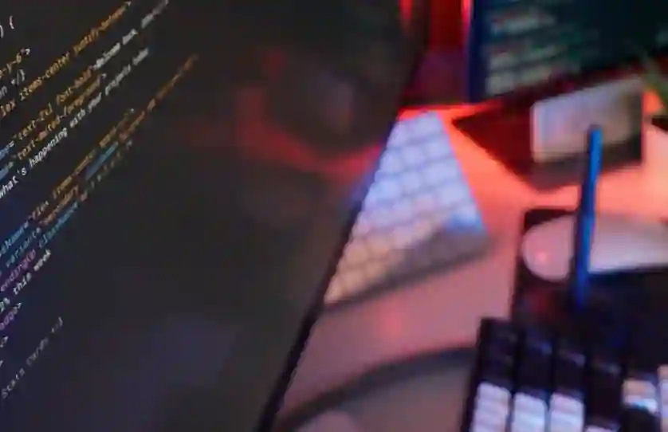

Passionate about clean code, responsive layouts, and continuous learning. I build dynamic, accessible web interfaces and functional software solutions grounded in solid software engineering fundamentals.
Hero images were obtained from Pexels
The Array images in the homepage projects section are all screenshots from my desktop
Project images from the project page were carefully edited on Adobe
All svg images and path were obtained from fontawesome and Bootstrap
Instructor images were obtain from Byu instructure dashboard via canvas for student, all credit to Mathew Kearl, Michael Brown and Kim Daley
Google fonts used on all pages